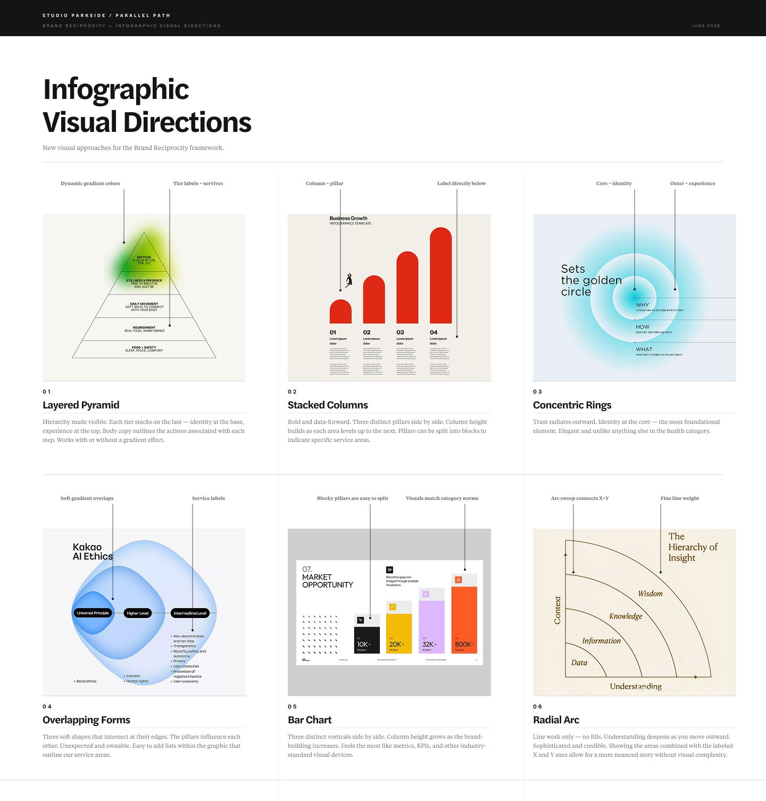

The thinking behind Brand Reciprocity is solid. The research holds up. The framework is part of the Parallel Path brand. What isn't working yet is how it shows up. The current landing page is built for someone who already believes, not someone who just arrived.
The landing page leads with too much information before it earns the reader's attention. The graphic requires explanation to work. The name "Brand Reciprocity" is being asked to lead before the idea has had a chance to land. There are no Parallel Path client examples yet, which makes the proof section feel thin.
A good foundation. A few things worth changing.
After several conversations with the team at Parallel Path, I have a clear picture of what Brand Reciprocity is and why it was built. The research is solid and the framework holds up. Where things get stuck is format and sequencing.
The current landing page leads with a state-of-the-industry argument, moves through dense consumer research, introduces a complex graphic, and then asks the reader to download a 24-page PDF. By the time someone gets to the actual offer, they've already made three decisions about whether to keep reading. Most won't make it that far.
The page is built for someone who already believes. It needs to be built for someone who just arrived.
The gear-and-circle system is conceptually ambitious but visually overloaded. Multiple fonts, five colors, arrows pointing in four directions, and a legend at the bottom that asks your eye to travel back and forth to decode what you're seeing. In reviewing it, I didn't understand that the gears were meant to close the gap between brand and consumer until it was explained out loud. A graphic that requires a voiceover to work isn't ready to travel on its own.
I don't want to rip this down and start over. Let's edit with intention and get more deliberate about the story, the format, and the visual language before we press go.
The primary audience is a CMO or VP of Marketing at a healthy living brand who is already spending money on media and wants to know if they're getting the most out of it. They're smart, they're busy, and they're skeptical of agencies that lead with their own credentials.
The secondary audience is an existing Parallel Path client who needs to understand that we're capable of a more holistic conversation than the one we've been having. This isn't a pitch to them. It's permission to go deeper.
What both audiences need to feel, in order:
I'm still not completely on board with this word, but I don't recommend abandoning it. It earns its place better when it arrives after the concept is already understood, not as the launchpad. Lead with the idea. Introduce the word once people are nodding. The framework name can stay. The word just doesn't need to be the first thing someone reads.
Health and wellness is a category label. A more evocative phrase like "healthy living" reflects human behavior and gives potential clients an opportunity to self-identify. The brands Parallel Path works with are embedded in how people actually live, not just how the industry classifies them. Shift toward "healthy living" language throughout, while keeping the framework specific enough to be credible to category specialists.
The framework's three connectors are right. Dropping the modifiers "Shared," "Intentional," and "Curated" makes each area immediately legible. The nuance those words were trying to convey belongs in body copy, in a video, or spoken in a meeting — not in the headline.
Do consumers see themselves in your brand? This is the foundation everything else is built on.
Are you showing up in the right places, at the right moments, with something worth paying attention to?
What happens after someone finds you? Every touchpoint either reinforces the promise or breaks it.

The goal isn't repeat visits to a URL. It's repeated encounters with the idea across the channels where clients and prospects already spend time. The landing page is one touchpoint in a larger campaign.
Where the audience lives. Text posts and short video from John, Amanda, and individual team members. Personal perspectives from practitioners who do this work every day. The agency amplifies. The people are the signal.
Triggered by the survey. Short, no-scroll messages. One idea per email. Links to schedule directly with a named person on the team. This is where the relationship starts, not the landing page.
One clear entry point. Leads with the perspective, earns the framework, shows the work, makes the ask. One CTA. No downloadable PDF. Everything lives on the page or in the email sequence that follows.
A stripped-back version for in-person meetings. Less copy, more conversation. The infographic lives in the corner of each slide to show where we are in the framework. Amanda and John do the talking.
The right long-term move is to bake this into the Parallel Path homepage and overall brand perspective — not keep it siloed on a landing page. This idea should feel like it's part of who the agency is, not a separate product or initiative.
Structure and tone guide only — not final copy. Eight sections from hero to CTA.
One or two lines. A provocation, not a tagline. Something like: "Healthy living used to live in one place. Now it's everywhere. The brands that win aren't just louder. They're more trusted." One sentence below about Parallel Path — a point of view, not credentials.
Two short paragraphs. The landscape has changed. Healthy living is no longer one category in one channel. We don't think about media in isolation. We never have. These three things — identity, connection, and experience — have to work together. When they do, consumers stop evaluating and start choosing. We call that Brand Reciprocity.
The core graphic lives here. Introduced simply. Below the graphic, each area gets a short description and its building blocks. One section per area. Enough to understand it, not enough to overwhelm.
Six questions. Tell us where you feel strong and where you feel the gap. After you submit, we do some research on your brand and start sending you insights specific to your category. No pitch. Just useful things we noticed. If it makes sense to talk, we'll say so. Submits inline. Results go to email. Page doesn't refresh.
One per area. Real work, real results. Brand category, the challenge, what we did, one outcome with a number. No brand name required if confidential.
After you submit, a real person on our team reads your responses, looks up your brand, and sends you something useful. Not a template. Something specific. If a conversation makes sense, we'll offer one. Team photos, names, and LinkedIn links here.
Brand Reciprocity isn't a product we sell. It's the lens we use with every client. Annual strategies, quarterly check-ins, every media recommendation. The goal is always the same: get to a place where your best customers aren't being persuaded. They're just choosing.
"Ready to see where your brand stands?" Button: Take the survey. Secondary: Schedule a conversation. Nothing else competing for the click.